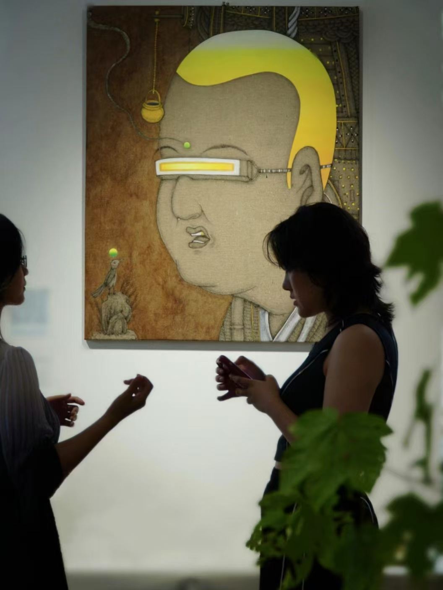
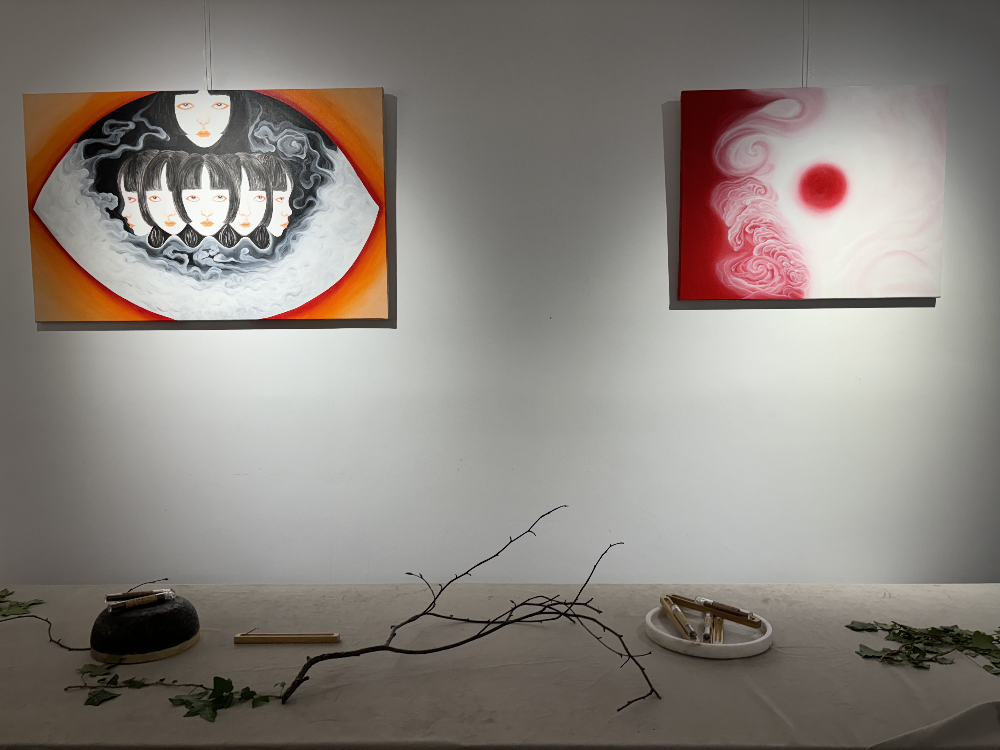
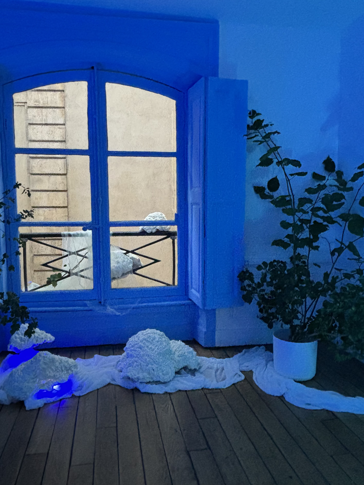
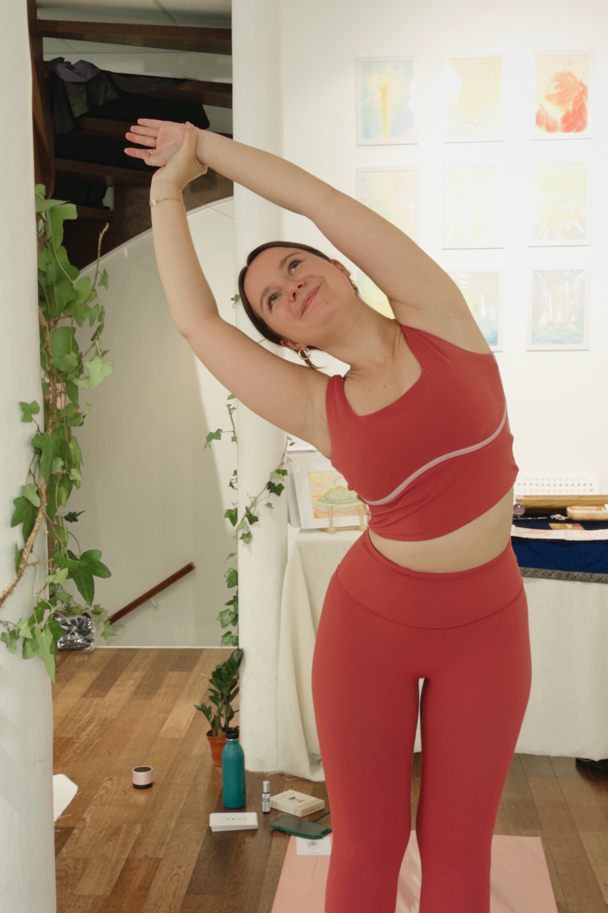
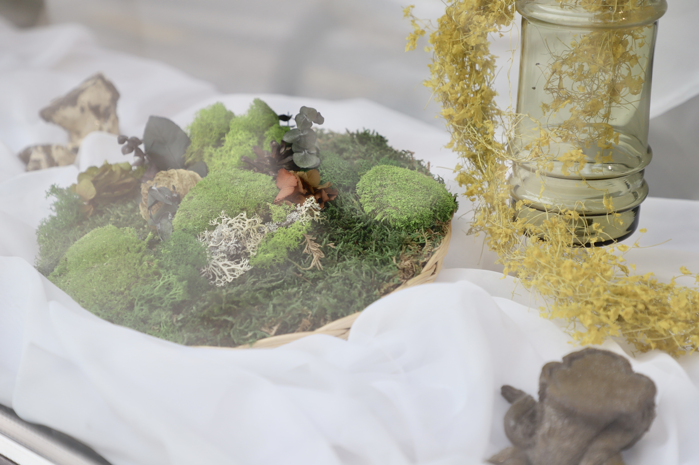
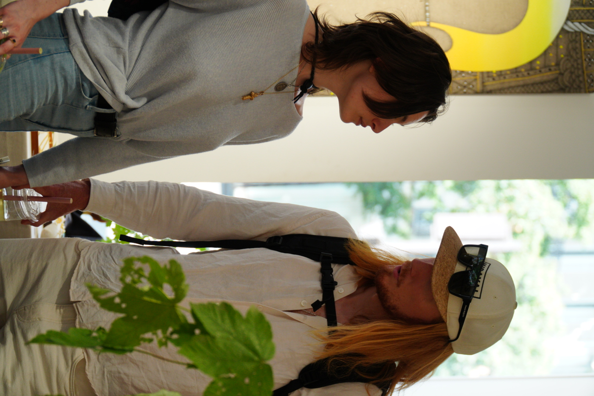
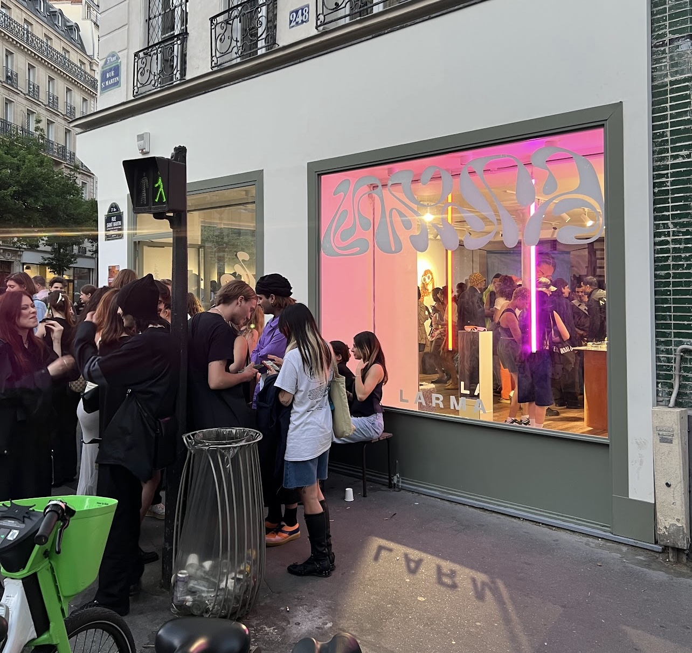

乌托邦不是一个地方，它是一段时间——在夜晚的某个小时里，陌生人因为共同的渴望而暂时成为邻居。
A recurring gathering — held in different spaces across Paris — whose subject was the condition of utopia itself: not as a destination, but as a quality of temporary experience that certain kinds of gathering can create.
The series grew from an observation about the Chinese creative community in Paris: highly educated, culturally hybrid, artistically ambitious, and largely invisible to one another. People were living parallel lives in the same city, their paths intersecting only by chance.
Utopia was designed as an intentional collision — but a gentle one, structured around shared artistic curiosity rather than shared nationality or profession. The programming brought together visual artists, musicians, writers, photographers, and cultural practitioners across both Chinese and French creative scenes.
这个系列从对巴黎华人创意社区的一个观察中生长出来：高度受教育的、文化混合的、艺术上有抱负的，但彼此之间基本上是隐形的。人们在同一个城市过着平行的生活，他们的路径只是偶然相交。乌托邦被设计成一次刻意的碰撞——但是温和的，围绕共同的艺术好奇心而不是共同的国籍或职业来构建。
Each edition of Utopia had a loose thematic frame — a question, an image, a material — that shaped the programming without determining it. Artists were invited to respond to the frame in whatever medium felt natural, and the conversations between different responses were often the most generative part of the evening.
The format resisted the tendencies of art events toward either networking or spectatorship. There were no name badges. No panels. No VIP sections. The spaces were chosen for qualities of intimacy and surprise — places that hadn't been used this way before.
The recurring nature of the series was part of its design. The first edition created an encounter; the third edition began to create a community; by the sixth, something had accumulated that couldn't be easily named but was clearly present.
每一个乌托邦版本都有一个松散的主题框架——一个问题、一个图像、一种材料——它塑造节目而不决定它。艺术家被邀请以任何感觉自然的媒介回应框架，不同回应之间的对话往往是晚上最富有成效的部分。这个形式抵制了艺术活动向社交或观赏的倾向。没有姓名徽章，没有小组讨论，没有VIP区。
The evening as a composed space — with its own rhythm, its own silences, its own moments of density and openness.
Each edition was designed as a sequence of experiences rather than a program of events. The arrival was its own moment — the transition from outside to inside, from the Paris street to the gathered space, was choreographed to mark a shift in register.
Music was curated to move between active listening and ambient presence — not background, but not demanding either. The art was positioned to be encountered rather than exhibited: some works were on walls, others were on tables, some existed only as conversations that had to be found.
Food and drink were chosen and prepared with the same attention as the art — not catered, but considered. The act of sharing food was understood as part of the cultural programming, not separate from it.
每个版本都被设计成一系列体验，而不是一个活动节目。到达本身就是一个时刻——从外面到里面、从巴黎街道到聚集空间的过渡被编排以标记语境的转换。音乐被精心挑选，在主动聆听和环境存在之间移动——不是背景，但也不是要求。艺术被定位为被遇见，而不是被展出。
A gathering that became something — not despite its impermanence, but through it.
Over the course of the series, Utopia became a reference point within Paris's Chinese creative community — not as an institution, but as a recurring quality of experience that people returned to and brought others to.
Collaborations, friendships, and creative partnerships emerged from encounters at Utopia that would not have happened through more formal channels. This is difficult to quantify and easy to undervalue — but it is the actual mechanism by which creative communities form.
The series demonstrated that the Chinese creative diaspora in Paris represents a genuine cultural force — not a niche audience, but a generative community capable of producing something new at the intersection of two aesthetic traditions.
在系列过程中，乌托邦成为巴黎华人创意社区内的一个参照点——不是作为一个机构，而是作为一种人们会回来并带他人前来的体验质量。从乌托邦的相遇中，涌现出了通过更正式渠道不会发生的合作、友谊和创意伙伴关系。这很难量化，也很容易被低估——但这是创意社区形成的实际机制。






Utopia Art Series · Paris · 2023–2024